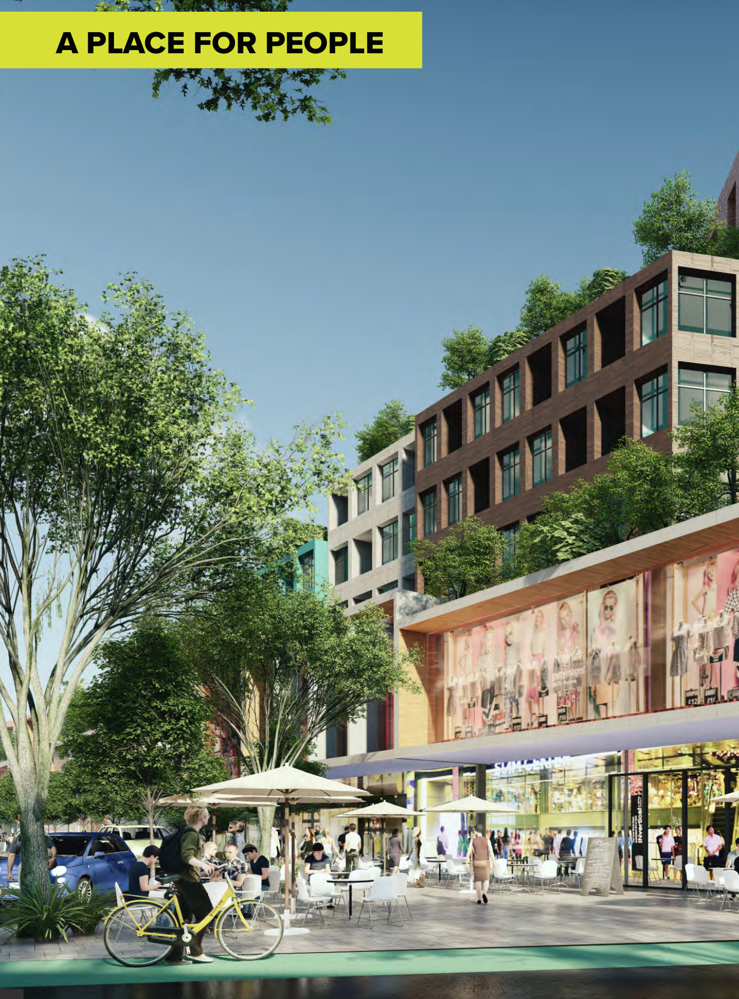
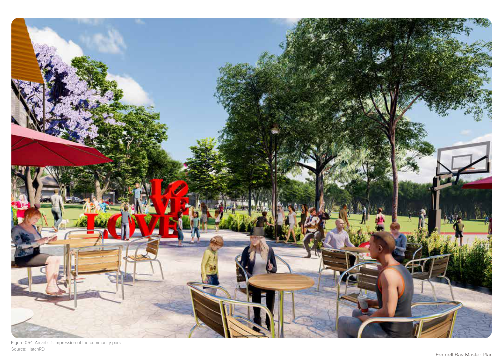

Nature-Led Communities
Selected Projects
01 / Collection



Selected Experience
Residential masterplanning shaped by landscape, ecology and public life.
Hatch RobertsDay brings together placemaking, urban design and strategic planning to shape communities where landscape, housing and public life are designed as one system. Across complex sites, the practice has worked with government and private clients to translate environmental, planning and infrastructure constraints into clear place-led development frameworks that support long-term social, ecological and commercial value.
Nature-Led Communities
